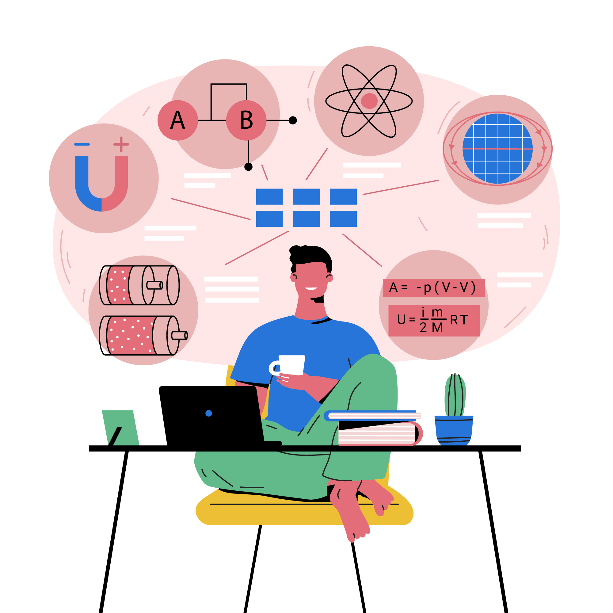

Works
LANGUAGES
I am familiar with programming languages such as C, C++, Python, Java and R. Out of these I am most proficient in Python And C++ as I have worked in various problems and projects in these languages. I also have expirience in working with HTML and CSS as I have done few projects in Web Designing. The other languages that i am familiar with are MATLAB, Aruduino and Verilog. These languages I have learnt either during my course or due to its use in my projects.
SKILLS
I am a frontend developer and have developed few websites for my projects. I am also a Machine learning enthusiast. I have experience in working with various machine learning algoithms and frameworks as well as handling datasets. I am familiar in working with PyTorch which is a Deep Learning framework and have implemented various deep learning algorithms using PyTorch. I have also worked in projects related to Open AI Gym and Gym Retro using a Reinforcement Learning framework called Stable Baselines. My experience also includes working in various Computer Vision Libraries.
PROJECTS
I have worked in various projects in topics including Frontend Development, Machine Learning and Comeputer Vision. Here I am
discussing 1 project from each domians mentioned above.
Online Survey Form
A simple online survey from using HTML, CSS and JavaScript. The forms takes in various informations from the user. To
view the project code on GitHub click here.
Reinforcement Learning Agent
A Reinforecement Learning agent using Open AI Gym Retro environment and using the algorithms and wrappers from Stable
Baselines3. The project aimed to make an RL agent for the game MarioSuperBros so that it can itself complete the level 1
of the game without any human intervention. To view the project code on GitHub
click here.
Video Player Using Gestures
A simple video player which uses gestures single hand gestures from the user to decide whether to play the video or pause
it. It can perform functions like play, pause, fast forward and rewind. To view the project code on GitHub
click here.
OTHER TECH INTERESTS
My other interests in the tech field include robots. I am part of the robotics club in my college where i get to learn more about this interest of mine. I have worked on few small wired bots using Aruduino and continue to learn more. I am also part of a project where we want to create a robotic hand which can perform various tasks. My next goal includes going into the field of Cyber Security as well as to become a Fullstack Developer.